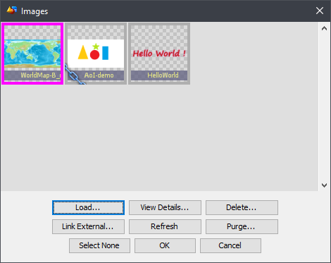
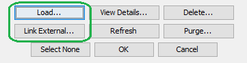
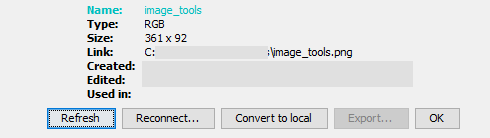

In Art of Illusion you can use images to generate textures. To manage the images select Scene Images...
Imagemapped textures and procedural editors also open this dialog to handle images.
|
Colored frame: Currently selected for an action. The selection color is defined in the current color theme. |
|
|
Paper clip: A texture or a material is using the image. Images that are in use can not be deleted. |
|
|
Chain: This image is linked from an external file. You can keep editing the file and Refresh for changes |
|
|
Broken chain: The linked image file could not be read. The icon shows, what kind of an image is missing. Try View Details → Reconnect to find the image |
To pick an image for your texture, click an image icon to select it and click OK.
You have two options for importing images: You can load them into the scene as local images or you can link them as external files.
A loaded image will be saved with the scene. It will be kept safe from any changes to the original image but it can not be edited or replaced.
A linked image stays as an independent image file. You can edit the image afterwards or even change the image, that the link is referring to. The link is saved in both relative and absoulte forms, so if you move the scene inside your hard drive, you can either move an entire folder structure including your images or you can keep the images in a stationary library.
Linked images are marked by a piece of a chain on lower left corner of the image icon. If the image file is not found, the chain icon appears broken and the displayed replacement icon will show, what type of an image is missing. To reconnect the link to a lost image, first click the icon to select it and then click View Details... Reconnect.
Refresh: Reload linked images. Use this if you have edited one.
Delete: Remove the selected image or link.
View Details: Open a dialog to handle the currently selected image
 Here you can:Purge: Delete unused images.
The Purge dialog will suggest to remove all unused images and links. You can select individually which ones to remove before performing the action. Purge does not delete images, that are currently in use.